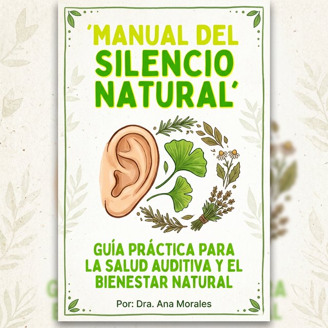

Hola, mi nombre es Juan y durante más de 10 años viví con un pitido constante que amenazaba mi cordura.
Los médicos me decían que era "la edad". Que mis oídos simplemente estaban cansados. Pero yo sentía que era algo más. Sentía una presión, una pulsación...
Todo cambió cuando conocí a Don Miguel, un herborista local que me explicó el concepto de limpieza vascular auditiva.
Él me enseñó que cuando las pequeñas arterias que rodean el nervio auditivo se inflaman o se "ensucian" con toxinas de la dieta moderna, el nervio empieza a enviar señales falsas al cerebro.
El resultado: Ese pitido interminable.
El Poder de los 3 Ingredientes Sagrados
Don Miguel me dio una receta simple pero poderosa. No es un medicamento, es una combinación de hierbas que seguramente ya tienes o encuentras en cualquier mercado:
- Ginkgo Biloba de Grado A: Para abrir los capilares auditivos.
- Extracto de Ajo Envejecido: Para limpiar las paredes arteriales.
- El tercer ingrediente secreto: Que actúa como conductor térmico.
Creé el 'Manual del Silencio Natural' para que nadie más tenga que pasar por lo que yo pasé. Es una guía paso a paso, fácil de seguir, para restaurar el flujo sanguíneo natural de tus oídos.
Comience Hoy Su Camino al Silencio

SÍ, QUIERO EL MANUAL POR $27
Acceso instantáneo digital. Un solo pago de $27.

Si en 7 días no sientes tus oídos más "ligeros" y el sonido no disminuye, escríbeme y te devuelvo el dinero. Confío plenamente en este método natural.